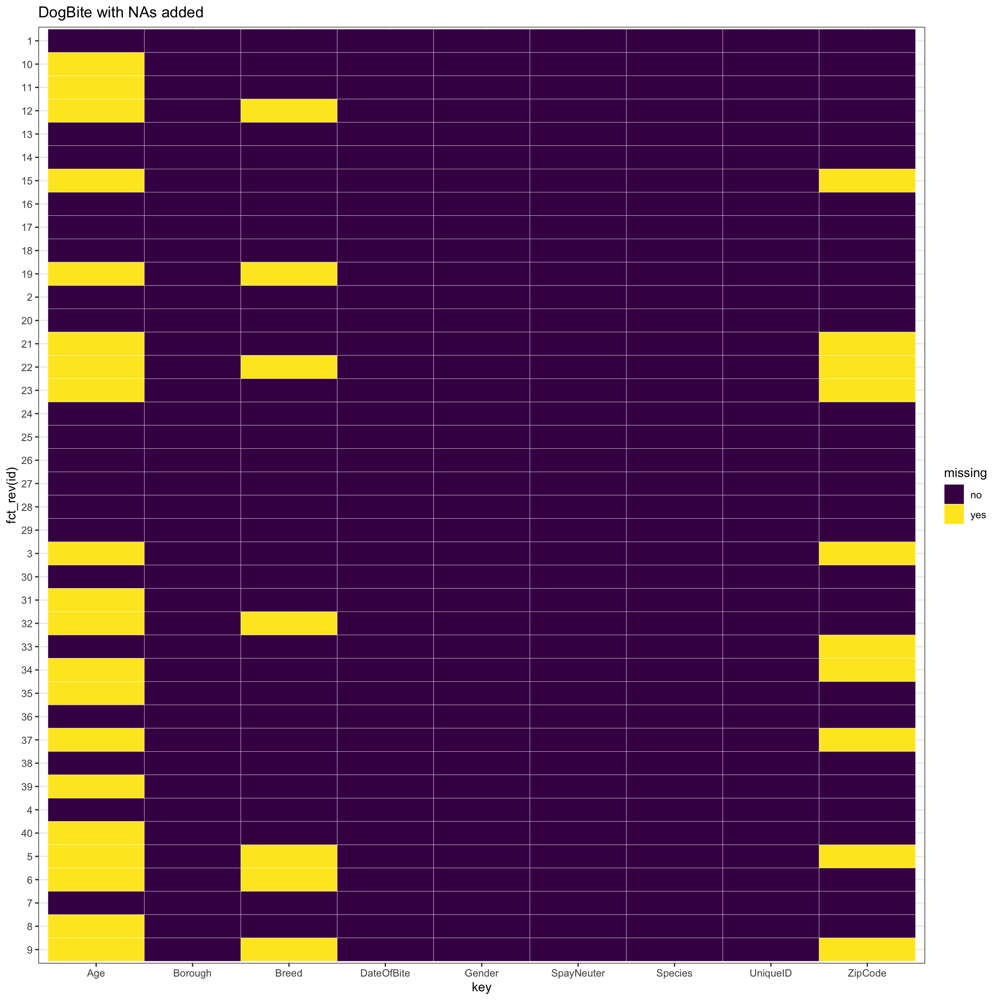
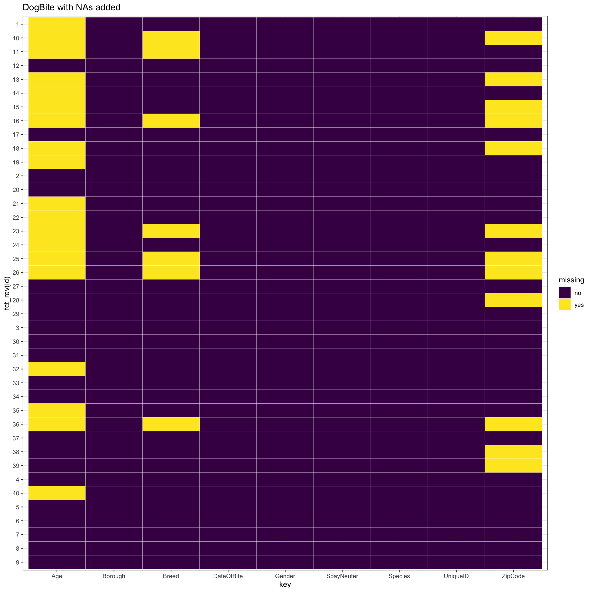
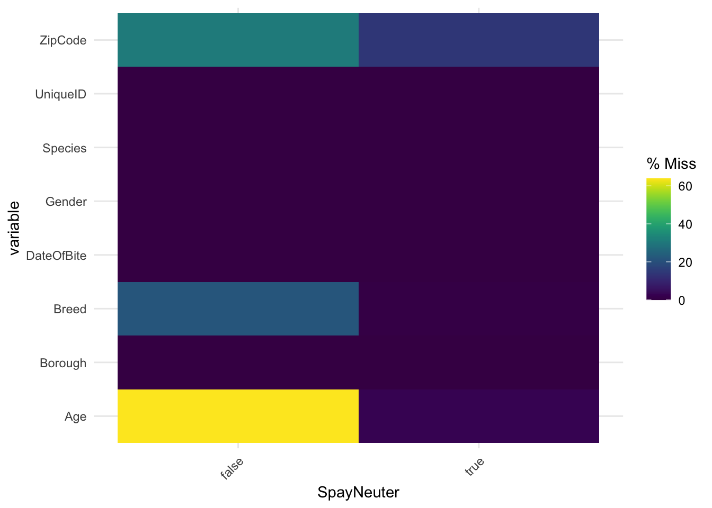

Chapter 5 Results
- Process data
- read doge bite data csv and other supplement data
DogBiteDF <- read_csv("DOHMH_Dog_Bite_Data.csv", na = c("", "NA","?"))
Temperature <- read_csv("tempbymonth.csv", na = c("", "NA"))
DogRegDF <- read_csv("NYC_Dog_Licensing_Dataset.csv")- data clean
- DateOfBite: Extract the Year and Month from the column ‘DateofBite’ ii: Breed There are numerous data with empty breed, so let’s set them as unknown iii: Age Several age records are string not numeric. Covert age in months to age in years.
iv: Reshape the temperature data frame v: DogBite dataframe left join temperature.
Temperature <- Temperature %>%
pivot_longer(!Year, names_to = "Month",
names_transform = list(Month = as.integer),
values_to = "Avg_temp",
values_drop_na = TRUE)
DogBiteDF <- DogBiteDF %>% left_join(., Temperature,
by=c('MonthOfBite'='Month', 'YearOfBite'='Year'), suffix = c("_x", "_y"))- Draw graphs
- The distribution of bite record on borough and years
data_for_draw <- DogBiteDF %>%
group_by(YearOfBite, Borough) %>%
count(name='value') %>%
arrange(YearOfBite, value)
# Set a number of 'empty bar' to add at the end of each group
empty_bar <- 1
to_add <- data.frame(matrix(NA, empty_bar*nlevels(as.factor(data_for_draw$YearOfBite)), ncol(data_for_draw)))
colnames(to_add) <- colnames(data_for_draw)
to_add$YearOfBite <- rep(as.numeric(levels(as.factor(data_for_draw$YearOfBite))), each=empty_bar)
data_for_draw <- rbind(data_for_draw, to_add)
data_for_draw <- data_for_draw %>% arrange(YearOfBite)
data_for_draw$id <- seq(1, nrow(data_for_draw))
# Get the name and the y position of each label
label_biteDF <- data_for_draw
number_of_bar <- nrow(label_biteDF)
angle <- 90 - 360 * (label_biteDF$id-0.5) /number_of_bar
label_biteDF$hjust <- ifelse(angle < -90, 1, 0)
label_biteDF$angle <- ifelse(angle < -90, angle+180, angle)
# prepare a data frame for base lines
baselines_DF <- data_for_draw %>%
group_by(YearOfBite) %>%
summarize(start=min(id), end=max(id) - empty_bar) %>%
rowwise() %>%
mutate(title=mean(c(start, end)))
# prepare a data frame for grid (scales)
grid_data <- baselines_DF
grid_data$end <- grid_data$end[c( nrow(grid_data), 1:nrow(grid_data)-1)] + 1
grid_data$start <- grid_data$start - 1
grid_data <- grid_data[-1,]
# Make the plot
graph1 <- ggplot(data_for_draw, aes(x=as.factor(id), y=value, fill=as.factor(YearOfBite))) +
geom_bar(stat="identity", alpha=0.5) +
annotate("text", x = rep(max(data_for_draw$id),4), y = c(200, 400, 600, 800), label = c("200", "400", "600", "800") , color="grey", size=2 , angle=0, fontface="bold", vjust=0.5) +
ylim(-500,900) +
theme_minimal() +
theme(
legend.position = "none",
axis.text = element_blank(),
axis.title = element_blank(),
panel.grid = element_blank(),
plot.margin = unit(rep(-1,4), "cm")
) +
coord_polar() +
geom_text(data=label_biteDF, aes(x=id, y=value+10, label=Borough, hjust=hjust), color="black", fontface="bold",alpha=0.6, size=2.5, angle= label_biteDF$angle, inherit.aes = FALSE ) +
# Add base line information
geom_segment(data=baselines_DF, aes(x = start, y = -50, xend = end, yend = -51), colour = "black", alpha=0.8, size=0.6 , inherit.aes = FALSE ) +
geom_text(data=baselines_DF, aes(x = title, y = -150, label=YearOfBite), vjust=1, colour = "black", alpha=0.8, size=2, fontface="bold", inherit.aes = FALSE) +
scale_color_brewer(palette = "RdYlBu")
graph1 - The distribution of bite record with the time.
data_for_draw_1 <- DogBiteDF %>%
group_by(MonthOfBite, Borough) %>%
count(name='value') %>%
arrange(Borough, MonthOfBite)
data_for_draw_1$Borough <- as.factor(data_for_draw_1$Borough) %>%
fct_reorder(., data_for_draw_1$value, min, .desc = TRUE)
graph2 <- ggplot(data_for_draw_1, aes(x=as.factor(MonthOfBite), y=value, fill=as.factor(Borough))) +
geom_bar(stat = "identity", width=0.8) +
facet_wrap(~ Borough, ncol = 2) +
theme_minimal() +
theme(legend.position = "none") +
labs(title="Bite records count by month",
x ="Month", y = "Numbers") +
scale_color_brewer(palette = "RdYlBu")
graph2
iii: The distribution of bite record with month average temperature.
data_for_draw_2 <- DogBiteDF %>%
group_by(Avg_temp, Borough) %>%
count(name='value') %>%
arrange(Borough, Avg_temp)
data_for_draw_2$Borough <- as.factor(data_for_draw_2$Borough) %>%
fct_reorder(., data_for_draw_2$value, min, .desc = TRUE)
graph3 <- ggplot(data_for_draw_2, aes(x=Avg_temp, y=value, color=as.factor(Borough))) +
geom_point() +
geom_smooth(method = "loess") +
facet_wrap(~ Borough, ncol = 2, scales='free_y') +
theme_minimal() +
theme(legend.position = "none") +
labs(title="Bite records count by Monthly Average Temperature",
x ="Temperature(F)", y = "Numbers") +
scale_color_brewer(palette = "RdYlBu")
graph3
iv: The distribution of bite record with breed, age, gender and neuter or not.
p_load(scales)
data_for_draw_3 <- DogBiteDF %>%
group_by(Breed) %>%
count(name='value') %>%
arrange(desc(value))
data_for_draw_3$Breed <- as.factor(data_for_draw_3$Breed) %>%
fct_reorder(., data_for_draw_3$value, min, .desc = TRUE)
data_for_draw_3$fraction <- data_for_draw_3$value / sum(data_for_draw_3$value)
data_for_draw_3$ymax <- cumsum(data_for_draw_3$fraction)
data_for_draw_3$ymin <- c(0, head(data_for_draw_3$ymax, n=-1))
data_for_draw_3$labelPosition <- (data_for_draw_3$ymax + data_for_draw_3$ymin) / 2
# Compute a good label
data_for_draw_3$label <- paste0(data_for_draw_3$Breed, ":\n ", data_for_draw_3$value)
data_for_draw_3 <- data_for_draw_3 %>% head(9)
# Make the plot
graph4 <- ggplot(data_for_draw_3, aes(ymax=ymax, ymin=ymin, xmax=3, xmin=2, fill=Breed)) +
geom_rect() +
geom_text(x=3.5, aes(y=labelPosition, label=percent(fraction,accuracy=0.01)), size=3, inherit.aes = FALSE) +
scale_fill_brewer(palette="RdYlBu") +
# scale_color_brewer(palette="RdYlBu") +
coord_polar(theta="y") +
xlim(c(0, 3)) +
theme_void() +
labs(title="Bite records count by Breed (Top 9)")
data_for_draw_3 <- DogRegDF %>%
rename(., Breed = BreedName) %>%
mutate(Breed = replace_na(Breed, 'UNKNOWN')) %>%
group_by(Breed) %>%
count(name='value') %>%
arrange(desc(value))
data_for_draw_3$Breed <- as.factor(data_for_draw_3$Breed) %>%
fct_reorder(., data_for_draw_3$value, min, .desc = TRUE)
data_for_draw_3$fraction <- data_for_draw_3$value / sum(data_for_draw_3$value)
data_for_draw_3$ymax <- cumsum(data_for_draw_3$fraction)
data_for_draw_3$ymin <- c(0, head(data_for_draw_3$ymax, n=-1))
data_for_draw_3$labelPosition <- (data_for_draw_3$ymax + data_for_draw_3$ymin) / 2
# Compute a good label
data_for_draw_3$label <- paste0(data_for_draw_3$Breed, ":\n ", data_for_draw_3$value)
data_for_draw_3 <- data_for_draw_3 %>% head(9)
# Make the plot
graph5 <- ggplot(data_for_draw_3, aes(ymax=ymax, ymin=ymin, xmax=3, xmin=2, fill=Breed)) +
geom_rect() +
geom_text(x=3.5, aes(y=labelPosition, label=percent(fraction,accuracy=0.01)), size=3, inherit.aes = FALSE) +
scale_fill_brewer(palette="RdYlBu") +
# scale_color_brewer(palette="RdYlBu") +
coord_polar(theta="y") +
xlim(c(0, 3)) +
theme_void() +
labs(title="NYC Dog Registered Number on Breed (Top 9)")
graph4
graph5p_load(ggridges)
data_for_draw_4 <- DogBiteDF %>%
filter(Age<25 & Age > 0)
# group_by(Age, Borough) %>%
# count(name='value') %>%
# arrange(Borough, Age)
data_for_draw_4$Borough <- as.factor(data_for_draw_4$Borough)
graph5 <- data_for_draw_4 %>%
ggplot(aes(y=Borough, x=Age, fill=Borough)) +
geom_density_ridges(alpha=0.6, stat="binline", bins=22, scale=0.9) +
theme_ridges() +
theme(
legend.position="none",
panel.spacing = unit(0.5, "lines"),
) +
labs(title="Bite records count by Age",
x ="Age (Year)", y = "Numbers")
graph5
data_for_draw_5 <- DogBiteDF %>%
group_by(Gender, SpayNeuter) %>%
count(name = 'Number') %>%
ungroup()
graph6 <- ggplot(data_for_draw_5, aes(Gender, SpayNeuter, fill= Number)) +
geom_tile() +
geom_text(aes(label = Number)) +
scale_fill_gradient(low="orange", high="red") +
theme_minimal()
graph6